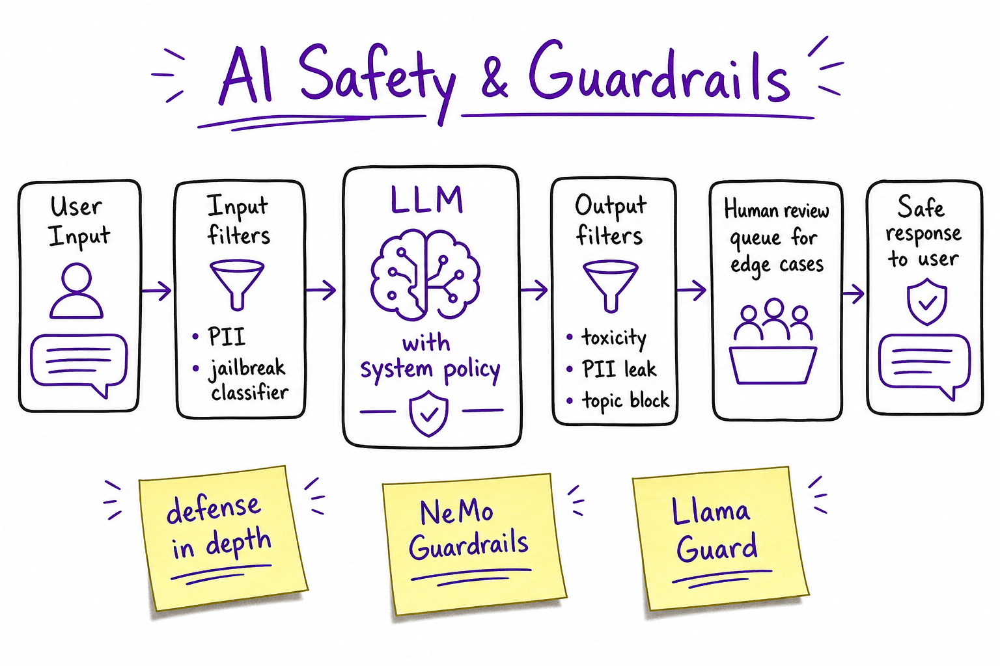
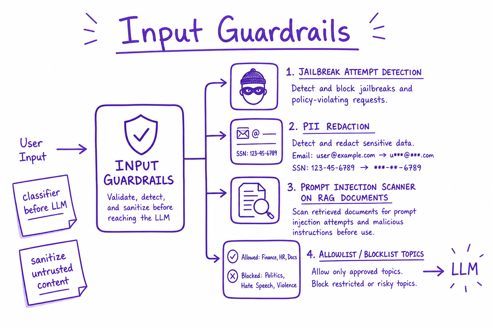
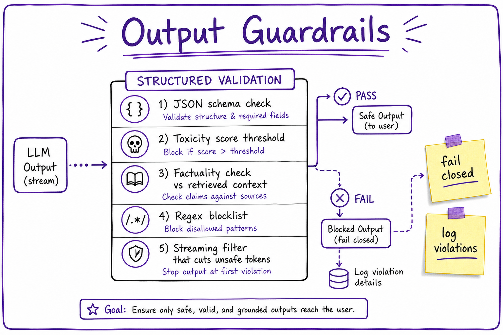

AI Safety & Guardrails // Fundamentals
Defense-in-depth for LLM apps: input filtering, system policies, output validation, PII handling, jailbreak detection, and human-in-the-loop for high-risk paths.

Layered safety: sanitize input, enforce system policy in the LLM, validate output, and route edge cases to human review before users see responses.
01 — What & Why
Aligned base models reduce harm but app-level guardrails enforce your policy: block jailbreaks, redact PII, validate JSON, refuse out-of-scope topics. Fail closed on high-risk domains.
Red-teaming: Constitutional AI.
01a — Core Concepts
| Term | Definition | Gotcha |
|---|---|---|
| Guardrails | Programmatic safety layers around LLM | Not just system prompt |
| Jailbreak | Bypass safety via clever prompt | Evolving arms race |
| Llama Guard | Classifier for unsafe I/O | Latency add ~20ms |
| NeMo Guardrails | Colang policy DSL | NVIDIA ecosystem |
| Fail closed | Block on classifier error | Better than leak |
01b — API Surface
# NeMo Guardrails colang snippet # define user ask chemistry # define bot refuse chemistry # define flow # user ask chemistry # bot refuse chemistry
02 — When to Use / When NOT
| Control | Use | Skip |
|---|---|---|
| Input classifier | Public-facing chat | Internal dev tools |
| Output schema | Structured API | Free-form creative |
| HITL | Finance/health | Low-risk FAQ |
| Topic blocklist | Regulated industries | General assistant |
03 — Architecture
User -> Input filter -> LLM (+ system policy) -> Output filter -> User
| jailbreak | toxicity/PII/schema
v v
Block / sanitize Regenerate / block04 — Deep Dive: Input Guardrails

Jailbreak detection, PII redaction, and injection scanning on user and RAG content.
Classify jailbreak attempts. Strip/mask PII before logging. Scan retrieved docs for injection ('ignore instructions'). Separate trusted system from untrusted user content.
05 — Deep Dive: Output Guardrails

Toxicity scoring, schema validation, streaming cutoffs, and topic blocklists on model output.
JSON schema validation; toxicity threshold; block regex (API keys, SSN patterns); streaming token filter.
06 — Deep Dive: PII & Privacy
Detect emails, phones, SSN with NER/regex. Redact before logs and third-party APIs. Regional compliance (GDPR delete, data residency).
07 — Deep Dive: Jailbreak Defense
Layer: classifier, prompt hardening, retrieval isolation, output refusal patterns. Red-team regularly. Never trust 'ignore previous instructions' in user docs.
08 — Deep Dive: Human-in-the-Loop
Queue low-confidence or high-risk outputs for human approval. See Production Agent.
09 — Production & Ops
- Log all guardrail triggers (no raw PII)
- Weekly red-team sprint
- Version guardrail models with LLM
- Incident runbook for bypass reports
10 — Where It Shows Up
11 — Common Pitfalls
- Relying only on model refusals
- Logging full prompts with PII
- No red-teaming after prompt changes
- Guardrails only on output not input
- False sense from single-turn tests